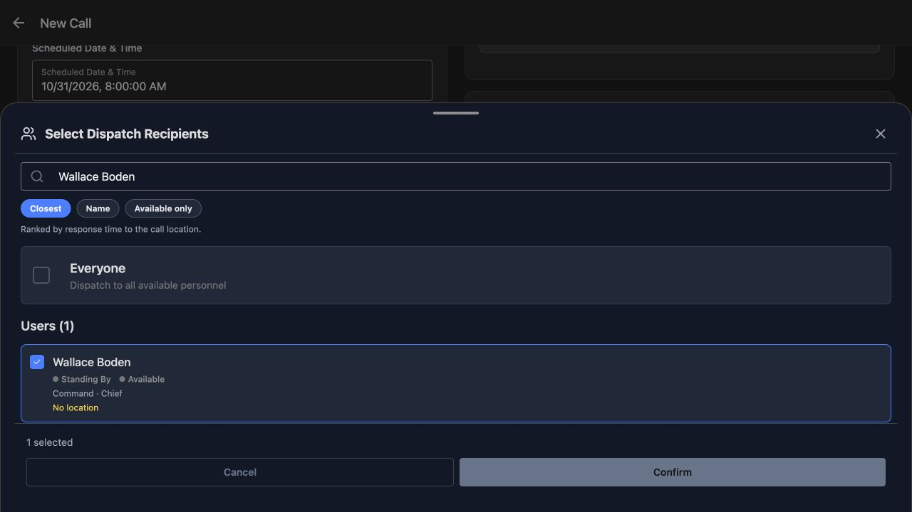
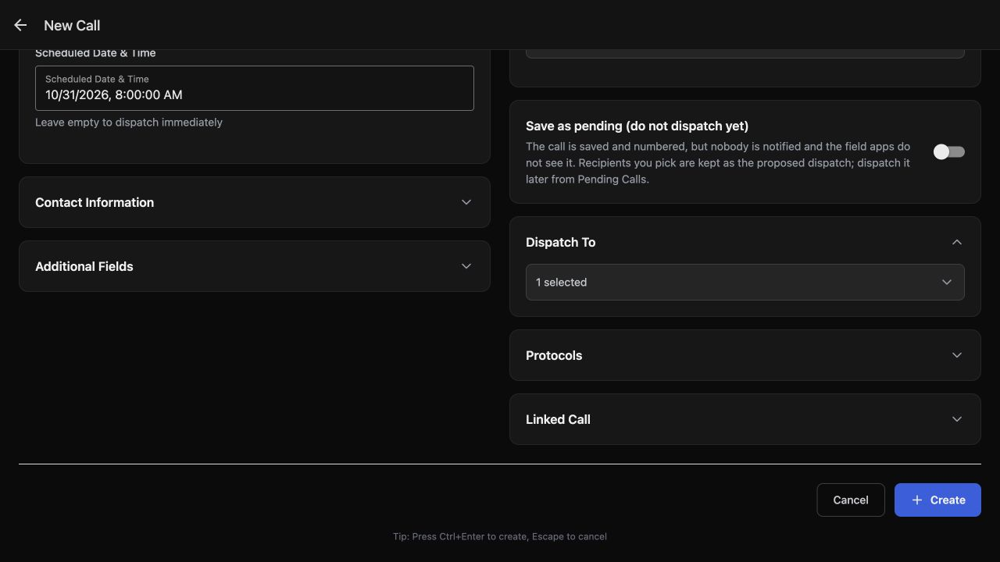
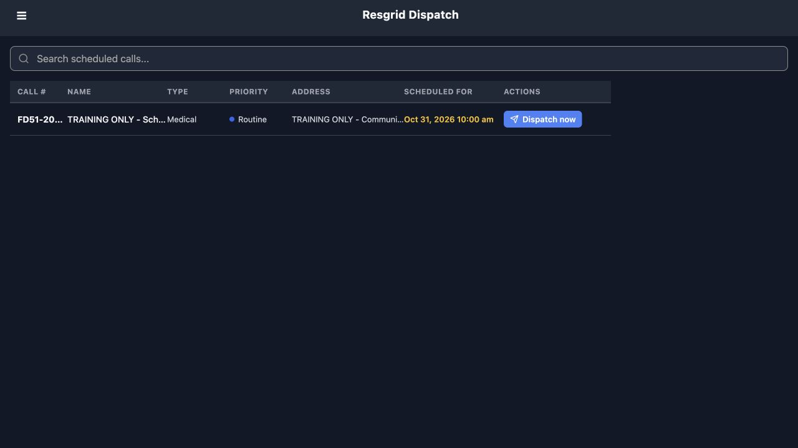
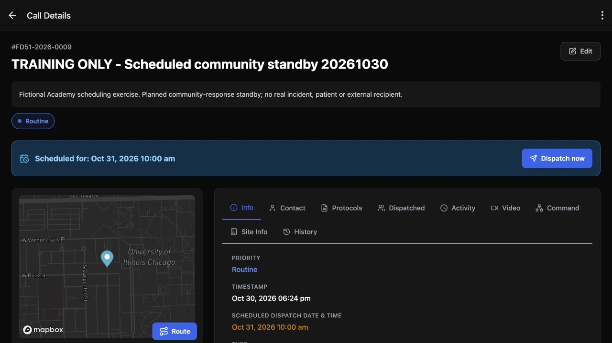
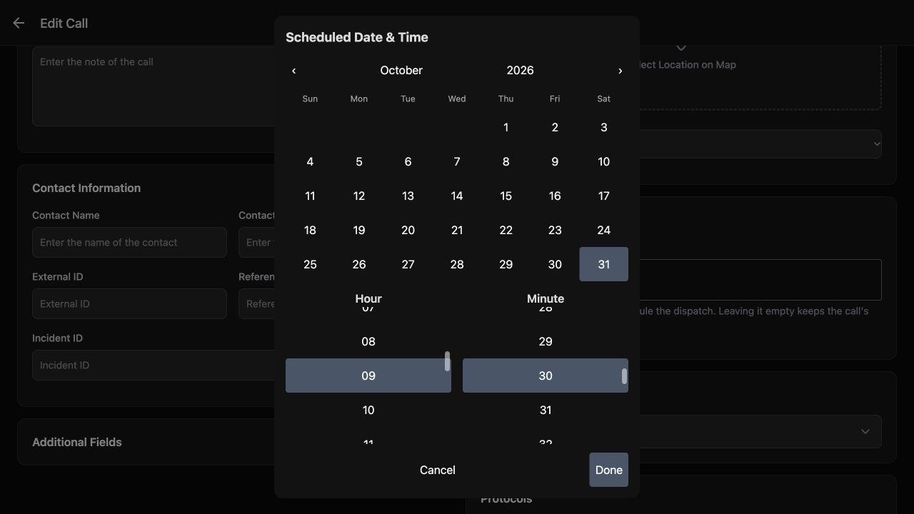
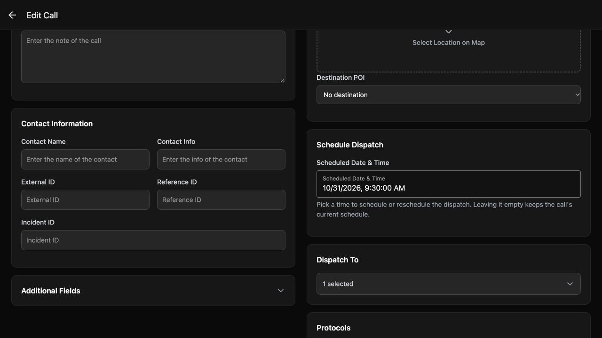
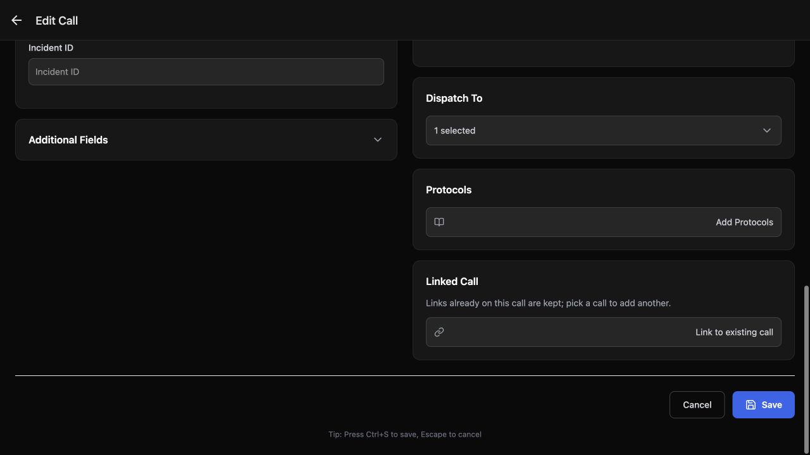
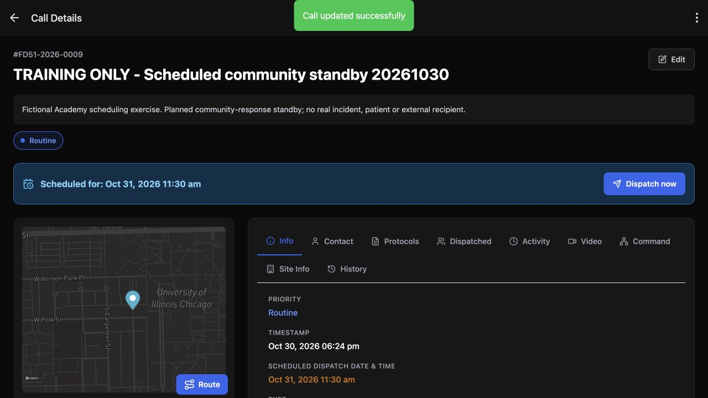

Dispatch · Video walkthrough
Create a scheduled standby and change its dispatch time
Create a planned training call, verify the saved department time, then change it through the full Edit Call form.
Before you begin
- Permission to create and edit calls in the department.
- A fictional training environment and intended test recipients.
- Understand that device and department clocks may differ.
Chapters
- Start with a clear practice call
- Choose the intended recipient
- Check the schedule before creating
- Keep scheduled and pending work distinct
- Check the saved scheduled entry
- Read the full call identity and time
- Compare the prepared time with the saved readback
- Use the actual Edit Call path
- Change the day, hour and minute
- Check the prepared replacement time
- Save the changed call
- Verify the result and apply the pattern
Watch the walkthrough
Step 1
Start with a clear practice call
Here on New Call, an authorized dispatcher is preparing a fictional community standby. The Name identifies it as training, and Nature explains the exercise. Priority is Routine and Type is Medical. Use a clear description and the choices that fit your department. These details help the next dispatcher understand the scheduled work without treating this example as a real incident.

Practice
Prepare a clearly named fictional call, explain its Nature, and review Priority and Type before scheduling.
Step 2
Choose the intended recipient
In Select Dispatch Recipients, Wallace Boden is the one checked person. Everyone is unchecked, and the footer confirms one selected. Check both the name and the count before choosing Confirm. This training account has No location, so this selection does not demonstrate a nearest-person calculation. The point here is to keep the planned dispatch list specific.

Practice
Identify the checked training recipient, unchecked Everyone option and selected count before confirming.
Step 3
Check the schedule before creating
The prepared Scheduled Date and Time is October thirty-first, twenty twenty-six, at eight in the morning on this device. Dispatch To still shows one selected. When entering a new schedule, choose a time at least fifteen minutes ahead; Dispatch checks that lead time when creating the call. Before using Create, check the date, the time and the intended recipients together.

Practice
Choose a future training date with at least fifteen minutes of lead time. Check the prepared time and recipient count before Create.
Step 4
Keep scheduled and pending work distinct
Leave Save as pending off for this scheduled-call exercise. Its explanation describes a different choice: a pending call is saved and numbered, with the proposed recipients retained, while nobody is notified and the field apps do not see it. Here, with the future date set and the pending option off, choose Create to save the scheduled call.
Practice
Explain the effect of Save as pending using the visible helper text. Keep it off for this scheduled-call exercise.
Step 5
Check the saved scheduled entry
The scheduled-call list now shows the saved entry with Medical, Routine and a Scheduled For time of October thirty-first at ten in the morning. The narrow columns shorten the call number and name on this screen. Open the row to read the complete identity and confirm the saved schedule before making further changes.

Practice
Read the scheduled list date, type and priority. Open the row for the full identity when table columns shorten the text.
Step 6
Read the full call identity and time
Call Details shows the complete call number and the training standby name. The blue Scheduled for banner and the Info date row both show ten in the morning. Read the saved result here. An entry remaining on this screen with a future schedule is not evidence that recipients have already received or acknowledged a dispatch.

Practice
Read the full saved call identity and scheduled banner. Distinguish a future schedule from a delivered or acknowledged dispatch.
Step 7
Compare the prepared time with the saved readback
Look again at the prepared eight o’clock value. This picker uses the device clock. The saved call shows ten o’clock in the department clock. That two-hour difference here represents the same scheduled instant. Read the saved date and time with your team before relying on the schedule, especially when dispatchers use devices in different time zones.
Practice
Compare the prepared device time with the saved department readback. Agree on the intended event time with your team.
Step 8
Use the actual Edit Call path
To move this planned dispatch, use Edit on Call Details. This walkthrough follows the full Edit Call form. Keep the same call identity so the revised schedule remains attached to the original training standby.
Practice
Locate Edit on the saved call and identify the full Edit Call route used in this exercise.
Step 9
Change the day, hour and minute
In the Scheduled Date and Time picker, October thirty-first is selected. The Hour column shows nine, and the Minute column shows thirty. Set the intended date and time in these controls, then choose Done. That commits the picker value to the edit form; it has not saved the call yet.

Practice
Check the selected date, Hour and Minute, then distinguish Done in the picker from saving the call.
Step 10
Check the prepared replacement time
The Edit Call form now shows October thirty-first at nine thirty in the morning on this device. Check that replacement value, and confirm that Dispatch To still has one selected. A changed schedule must also be at least fifteen minutes ahead. The helper explains that leaving this field empty keeps the current schedule; it does not remove the scheduled dispatch.

Practice
Review the replacement device time and selected count. Explain why an empty field keeps the existing schedule.
Step 11
Save the changed call
At the bottom of Edit Call, choose Save to submit the change. Review the result on the call itself before telling anyone that its schedule has moved. The selected value in the editor was preparation; the saved call is the readback.

Practice
Use a fictional call to locate Save at the bottom of Edit Call, then inspect the resulting call readback.
Step 12
Verify the result and apply the pattern
Call updated successfully appears on the same training call. The Scheduled for banner and Info row now show eleven thirty in the morning in the department clock. That is the saved result of choosing nine thirty on this device. The call is still scheduled. Use this pattern for a fire or EMS standby, a community paramedicine or mental-health coordination exercise, a search-and-rescue briefing, planned security support, a wildland contractor drill, or industrial response-team training. Agree on the event time, select the intended recipients, save the schedule, and read back the department time on the call.

Practice
Verify the same call identity, success message and revised department time. Keep dispatch-now delivery and closure separate from this scheduling result.
Examples for your department
- Fire / EMS
- Plan a fictional standby or training event and verify its saved department time.
- Community response
- Schedule a community paramedicine or mental-health coordination exercise using team metadata and test recipients.
- Search and rescue
- Plan a search-and-rescue briefing or exercise and read back the agreed event time.
- Security
- Prepare scheduled security support with the intended training recipient list and verify the saved schedule.
- Wildland
- Plan a wildland contractor drill, then review a changed dispatch time on the same training call.
- Industrial
- Coordinate an industrial response-team exercise and confirm the revised department-clock readback.
Transcript
Download transcriptRead the complete transcript
Create a scheduled standby and change its dispatch time Audience: Department dispatchers, Department administrators Start with a clear practice call Here on New Call, an authorized dispatcher is preparing a fictional community standby. The Name identifies it as training, and Nature explains the exercise. Priority is Routine and Type is Medical. Use a clear description and the choices that fit your department. These details help the next dispatcher understand the scheduled work without treating this example as a real incident. Practice: Prepare a clearly named fictional call, explain its Nature, and review Priority and Type before scheduling. Choose the intended recipient In Select Dispatch Recipients, Wallace Boden is the one checked person. Everyone is unchecked, and the footer confirms one selected. Check both the name and the count before choosing Confirm. This training account has No location, so this selection does not demonstrate a nearest-person calculation. The point here is to keep the planned dispatch list specific. Practice: Identify the checked training recipient, unchecked Everyone option and selected count before confirming. Check the schedule before creating The prepared Scheduled Date and Time is October thirty-first, twenty twenty-six, at eight in the morning on this device. Dispatch To still shows one selected. When entering a new schedule, choose a time at least fifteen minutes ahead; Dispatch checks that lead time when creating the call. Before using Create, check the date, the time and the intended recipients together. Practice: Choose a future training date with at least fifteen minutes of lead time. Check the prepared time and recipient count before Create. Keep scheduled and pending work distinct Leave Save as pending off for this scheduled-call exercise. Its explanation describes a different choice: a pending call is saved and numbered, with the proposed recipients retained, while nobody is notified and the field apps do not see it. Here, with the future date set and the pending option off, choose Create to save the scheduled call. Practice: Explain the effect of Save as pending using the visible helper text. Keep it off for this scheduled-call exercise. Check the saved scheduled entry The scheduled-call list now shows the saved entry with Medical, Routine and a Scheduled For time of October thirty-first at ten in the morning. The narrow columns shorten the call number and name on this screen. Open the row to read the complete identity and confirm the saved schedule before making further changes. Practice: Read the scheduled list date, type and priority. Open the row for the full identity when table columns shorten the text. Read the full call identity and time Call Details shows the complete call number and the training standby name. The blue Scheduled for banner and the Info date row both show ten in the morning. Read the saved result here. An entry remaining on this screen with a future schedule is not evidence that recipients have already received or acknowledged a dispatch. Practice: Read the full saved call identity and scheduled banner. Distinguish a future schedule from a delivered or acknowledged dispatch. Compare the prepared time with the saved readback Look again at the prepared eight o’clock value. This picker uses the device clock. The saved call shows ten o’clock in the department clock. That two-hour difference here represents the same scheduled instant. Read the saved date and time with your team before relying on the schedule, especially when dispatchers use devices in different time zones. Practice: Compare the prepared device time with the saved department readback. Agree on the intended event time with your team. Use the actual Edit Call path To move this planned dispatch, use Edit on Call Details. This walkthrough follows the full Edit Call form. Keep the same call identity so the revised schedule remains attached to the original training standby. Practice: Locate Edit on the saved call and identify the full Edit Call route used in this exercise. Change the day, hour and minute In the Scheduled Date and Time picker, October thirty-first is selected. The Hour column shows nine, and the Minute column shows thirty. Set the intended date and time in these controls, then choose Done. That commits the picker value to the edit form; it has not saved the call yet. Practice: Check the selected date, Hour and Minute, then distinguish Done in the picker from saving the call. Check the prepared replacement time The Edit Call form now shows October thirty-first at nine thirty in the morning on this device. Check that replacement value, and confirm that Dispatch To still has one selected. A changed schedule must also be at least fifteen minutes ahead. The helper explains that leaving this field empty keeps the current schedule; it does not remove the scheduled dispatch. Practice: Review the replacement device time and selected count. Explain why an empty field keeps the existing schedule. Save the changed call At the bottom of Edit Call, choose Save to submit the change. Review the result on the call itself before telling anyone that its schedule has moved. The selected value in the editor was preparation; the saved call is the readback. Practice: Use a fictional call to locate Save at the bottom of Edit Call, then inspect the resulting call readback. Verify the result and apply the pattern Call updated successfully appears on the same training call. The Scheduled for banner and Info row now show eleven thirty in the morning in the department clock. That is the saved result of choosing nine thirty on this device. The call is still scheduled. Use this pattern for a fire or EMS standby, a community paramedicine or mental-health coordination exercise, a search-and-rescue briefing, planned security support, a wildland contractor drill, or industrial response-team training. Agree on the event time, select the intended recipients, save the schedule, and read back the department time on the call. Practice: Verify the same call identity, success message and revised department time. Keep dispatch-now delivery and closure separate from this scheduling result. Examples for your department Fire / EMS: Plan a fictional standby or training event and verify its saved department time. Community response: Schedule a community paramedicine or mental-health coordination exercise using team metadata and test recipients. Search and rescue: Plan a search-and-rescue briefing or exercise and read back the agreed event time. Security: Prepare scheduled security support with the intended training recipient list and verify the saved schedule. Wildland: Plan a wildland contractor drill, then review a changed dispatch time on the same training call. Industrial: Coordinate an industrial response-team exercise and confirm the revised department-clock readback.